As mentioned previously our goal is to predict the heat transfer coefficient after the critical heat flux has been exceeded. If one used the empirical correlations of the past section, it is clear these are applicable between the axial location of CHF,  (Figure 8.1), and the location where the equilibrium quality, equals one ( 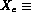 1, 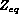 ). Remember, these past correlations are based on the assumptions that thermodynamic equilibrium exists between the vapor and liquid, and one temperature, 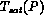 , with quality,
(Figure 8.1), and the location where the equilibrium quality, equals one ( 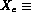 1, 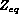 ). Remember, these past correlations are based on the assumptions that thermodynamic equilibrium exists between the vapor and liquid, and one temperature, 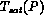 , with quality,  , determines the thermodynamic state of the fluid. However, if one considers the more realistic situation where the liquid droplets are at a different temperature,
, determines the thermodynamic state of the fluid. However, if one considers the more realistic situation where the liquid droplets are at a different temperature,  , than the vapor 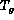 , one must again determine the "true" quality variation in difference to 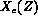 to then determine the wall temperature given the heat flux. This situation is analogous to our discussion in subcooled boiling when = 0 but actually X'(z) > 0 now in the post-CHF region, but X'
(z < 1) (Figure 8.1). Therefore, our first objective is to determine the axial variation of this "true" quality, and the point where 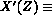 1 (i.e., ).
, than the vapor 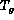 , one must again determine the "true" quality variation in difference to 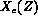 to then determine the wall temperature given the heat flux. This situation is analogous to our discussion in subcooled boiling when = 0 but actually X'(z) > 0 now in the post-CHF region, but X'
(z < 1) (Figure 8.1). Therefore, our first objective is to determine the axial variation of this "true" quality, and the point where 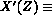 1 (i.e., ).
Consider the case of a constant heat flux. Now in this non-equilibrium approach we assume that the heat flux can be divided into two portions; one directly heating the vapor, q"g , and one directly into the liquid, q"f , causing it to evaporate.

where we define e as
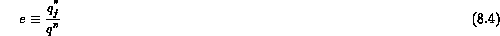
and it is assumed for simplicity that e = f(Z). If we realistically consider the temperature difference of and  , then one must realize that e is actually a function of position; for a constant e we get
, then one must realize that e is actually a function of position; for a constant e we get
Now from a one-dimensional energy balance on the channel the thermodynamic quality is given by
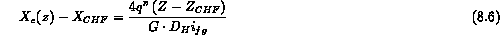
where for  = 1 we can find the location of
= 1 we can find the location of
Now we can use the same energy balance method to find X'(z)
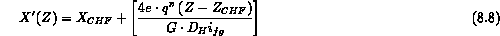
where once again we only use the portion of the total heat flux which goes into evaporation. The location where X'(Z) = 1 is defined as  and is given by
and is given by
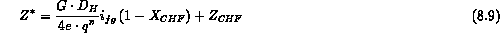
so that we can solve for this fraction of the total flux, e, as
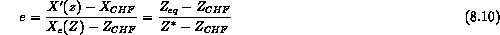
where we can correlate e based on measurements of these quantities. Once we have a correlation for e we can derive an expression for the heat transfer coefficient from it definition. Note that the heat transfer coefficient would be different between the wall-vapor and wall-liquid. Groeneveld has suggested such a correlation for e given by
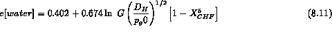
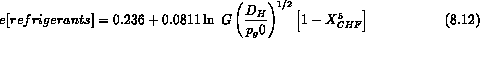
This approach is not necessarily recommended compared to others, because although it includes some degree of realism it still remains quite empirical for the key variable.